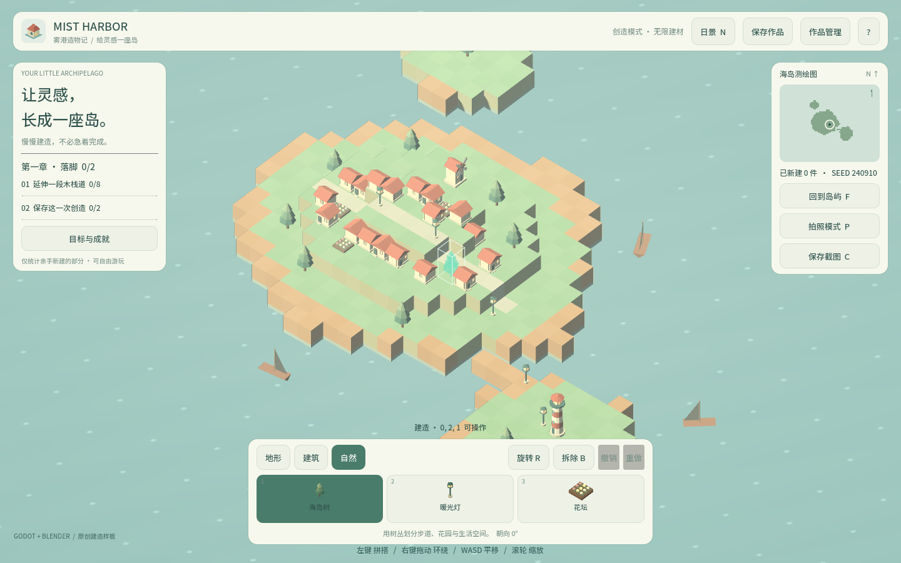
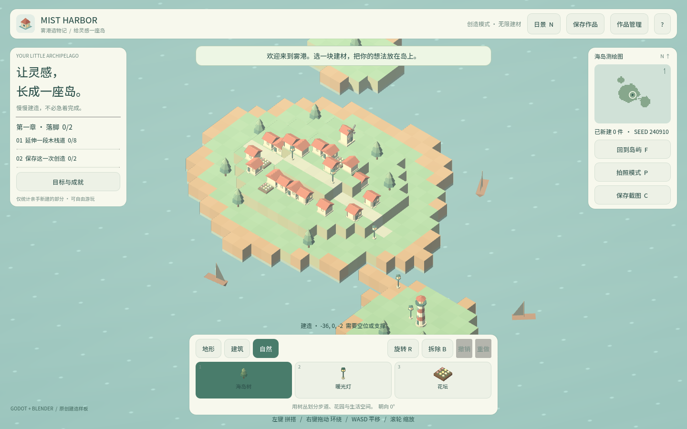
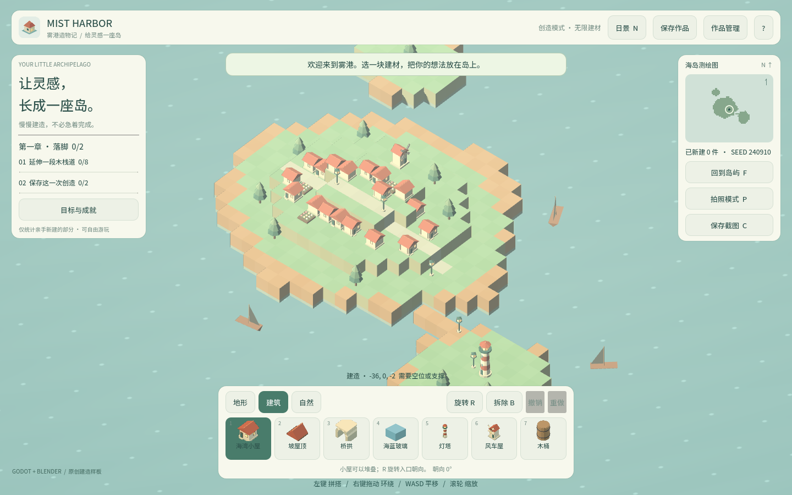

卷 2 · 第 11 章 main.gd：相机、输入与 UI 骨架
本章目标：读通
main.gd的"三大循环"——相机、输入、UI；
理解 QA 快照机制（本实训自动化测试的基石），以及代码建 UI 的取舍。
对应任务：T20（任务导出）/ T41（自动化 QA） | 对应文件：project/scripts/main.gd（约 800 行）
11.1 相机：不是"设置"，是"目标值 + 插值"
var focus := Vector3(0, 1, 1)
var target_focus := Vector3(0, 1, 1) # 目标
var yaw / target_yaw / pitch / target_pitch / zoom / target_zoom
func _update_camera(delta):
var weight := minf(1.0, delta * 12.0)
focus = focus.lerp(target_focus, weight) # 阻尼跟随
...
camera.position = focus + Vector3(sin(yaw)*cos(pitch), sin(pitch), cos(yaw)*cos(pitch)) * 48.0
camera.look_at(focus, Vector3.UP)| 设计要点 | 说明 |
|---|---|
| --- | --- |
| 双份状态 | 每帧从"当前值"追向"目标值"，输入只改目标 → 手感平滑 |
| 正交相机 | camera.size = zoom，等距视角（0.72 / 0.72 弧度），与缩略图相机同参数 |
| 摇杆式平移 | WASD/方向键沿 right / forward 移动，速度与 zoom 成正比（拉远走得快） |
| 边界钳制 | clampf(target_focus.x, -23, 23)，比世界边界 ±25 小 2 格，防止飞出去 |
📌 注意
KEY_S+KEY_CTRL：Ctrl+S是保存快捷键，所以按下 Ctrl 时S不再触发后退——
这类"快捷键冲突的手动消歧"在小工程里很常见，值得记住。
11.2 输入：两个入口，一条总线
func _input(event) # 鼠标按键的按下/松开（拖拽状态机）
func _unhandled_input(event) # 键盘快捷键、滚轮（UI 没吃掉才走到这里）| 输入 | 行为 |
|---|---|
| --- | --- |
| 左键点击 | _act_on_world(true)：放置 / 拆除 |
| 左键按住拖动 | 连续绘制（painting，每 0.17s 一次，位移 > 8px 才触发） |
| 右键拖动 | 旋转视角（orbiting） |
| 中键拖动 | 平移（panning） |
| 滚轮 | 缩放 target_zoom（钳 14–64） |
| Q / E | 左右转 |
| R | 旋转待放置道具 |
| X | 切换拆除模式 |
| Ctrl+Z / Ctrl+Y | 撤销 / 重做 |
| Ctrl+S | 保存作品 |
| N | 昼夜 |
| F | 回到岛屿中心 |
| P | 隐藏/显示 HUD（截图用） |
| C | 保存截图（相机快照） |
| H | 帮助 |
| Esc | 关闭弹窗 |
⚠️ 注意：撤销/重做/保存都带 Ctrl，单独按
Z是无效的；P不是拍照，它是隐藏 HUD（为了截干净的游戏画面），真正的截图是C。
另外WASD与Ctrl+S冲突，代码里用if not Ctrl手动消歧（见 11.1）。
_unhandled_input 的意义：Godot 的输入顺序是_input → GUI → _unhandled_input。把快捷键放后者，UI 按钮就不会"顺带"触发快捷键。
11.3 UI：全部由代码 new 出来
main.tscn 里没有 HUD——_build_ui() 用一堆小工具函数拼出全部界面：
func _panel(parent) -> PanelContainer # 带 StyleBoxFlat 的面板
func _vbox / _hbox(parent, separation) # 容器
func _label(parent, text, size, color) # 文本
func _button(parent, title, action, key) # 按钮（可注册进 action_buttons）结构：
HUD (Control)
├─ topbar 标题 / 章节 / 模式提示
├─ objective_panel 任务目标 + 进度条
├─ map_panel 小地图（见第 12 章）
├─ dock 建材栏（分类按钮 + 道具按钮）
└─ help_strip / footer / toast / status为什么代码建 UI？
- 优点：UI 结构随数据变化（建材栏按
palette.json生成，第 08 章） - 代价：布局靠
_layout()手写锚点，改起来不如编辑器直观
11.4 QA 快照机制（本实训自动化测试的基石）
var qa_enabled: bool = false
func _process(delta):
if qa_enabled:
qa_time += delta
if qa_time > 0.25:
qa_time = 0.0
JavaScriptBridge.get_interface("window").harborState = JSON.stringify(qa_snapshot())qa_snapshot() 导出一整包内部状态：
| 字段 | 用途 |
|---|---|
| --- | --- |
selected / category / rotation / demolish / night | 当前编辑状态 |
placed / counts / cells / faces / assets | 世界统计（测试断言靠它们） |
undo / redo / dirty / revision | 历史与版本号（验证撤销/重做真的生效） |
last_error | 最近一次错误（验证非法操作被拒绝） |
buttons | 所有按钮的屏幕矩形 → 测试可以精确点击 |
viewport | 视口尺寸 |
pick | 当前拾取结果 |
为什么这样设计？
- 黑盒测试只能截图对比，很脆弱；白盒快照让测试断言语义（"放了 3 个"而不是"画面变了"）
- 按钮矩形导出后，测试不需要猜坐标 → 分辨率变化也不会失效
- 只在
qa_enabled时执行：正式发布零开销（qa_enabled默认 false，由测试注入开启）
📌 这是本实训最重要的工程决策之一：为可测试性付出一点点代码，
换来 23 项浏览器验收 + 68 项引擎内断言（56 模型 + 12 场景） 的稳定回归（见卷 6）。
🌩 在云端 agent（web-cb）里是什么样
| 🖥 本地路线 | 🌩 云端 agent（web-cb） | |
|---|---|---|
| --- | --- | --- |
| QA 快照 | Playwright 读 window.harborState | 平台内置预览同样可注入/读取（取决于平台是否暴露 JS 桥） |
| 视觉验收 | 本地 Chromium | 云端 WebGL 预览（更接近真实学员环境） |
| 输入模拟 | Playwright mouse.click | 平台能力；逻辑层仍可用 dev.py test 覆盖 |
| 建议 | 三层都跑 | 至少保证 dev.py test + 浏览器冒烟，因为它就是 WebGL 环境 |
🌩 云端最省心的组合：快照断言（不依赖画面）+ 少量视觉冒烟（验证没黑屏）。
11.5 常见坑速查（本章）
| 现象 | 原因 | 处理 |
|---|---|---|
| --- | --- | --- |
| 快捷键打字时也触发 | 放错了输入回调 | 用 _unhandled_input |
Ctrl+S 同时后退 | 快捷键冲突 | 判 KEY_CTRL 手动消歧（本工程已做） |
| 相机抖动/漂移 | 直接改当前值而非目标值 | 保持双份状态 + lerp |
| 相机飞出世界 | 没钳制 focus | clampf(±23) |
| 测试点不中按钮 | 坐标写死 | 读快照的 buttons 矩形 |
| 拖动绘制太密 | 没有节流 | 0.17s + 8px 位移阈值 |
11.6 本章作业
- 说出相机为什么用"目标值 + 插值"而不是直接赋值，写一句伪代码说明
- 列举
_input与_unhandled_input各自适合放什么，各举一例 - 读
qa_snapshot()，指出测试用来判断"撤销成功"的两个字段，并说明为什么需要两个 - 在
qa_snapshot()里加一个字段（例如selected_name），跑一次browser_smoke.py确认不破坏既有断言
🎓 教学提示（给教师 / 直播主）
- 概念锚点：为可测试性而设计。QA 快照不是"给测试开后门"，是把内部状态显式化。
- 课堂演示：打开浏览器控制台输入
harborState，现场看这包 JSON。 - 高频误解：学生觉得"写测试代码污染产品代码"。讨论：快照只在开关打开时才跑，发布零开销。
- 讨论题：快照该导出哪些字段？导太多会不会变成"实现细节泄漏"？
- 批改要点：作业 3 要答出"状态字段 + 版本号/撤销栈"，只答一个不给满分。
🖼 本章图集



📹 录屏分镜（10 分钟）
| 时间 | 画面 | 解说词要点 |
|---|---|---|
| --- | --- | --- |
| 00:00–01:40 | 相机代码：目标值 + lerp | "输入只改目标，画面自己追。" |
| 01:40–03:00 | 输入表 + _unhandled_input 顺序 | "UI 先吃，剩下的才是我。" |
| 03:00–04:20 | 代码建 UI 的取舍 | "建材栏是数据生成的。" |
| 04:20–07:00 | 控制台跑 harborState，逐字段讲 | "测试断言的是语义，不是像素。" |
| 07:00–09:00 | 按钮矩形导出 → 测试精确点击 | |
| 09:00–10:00 | 作业 + 预告（昼夜与小地图） |
🎬 视频位（待录制）
把录好的视频放到course/media/video/11/（mp4 / webm / mov），重新执行 python tools/course_build.py 即会自动内嵌；首帧默认用本章第一张截图作为封面。分镜脚本见上一节。🖼 配图清单
| 文件名 | 内容 | 生成方式 |
|---|---|---|
| --- | --- | --- |
11-hud-overview.png | 完整 HUD（顶栏/任务/小地图/建材栏） | python tools/course_capture.py --chapter 11 |
11-category-dock.png | 切换到"自然"分类后的建材栏 | 同上 |
11-camera-zoom.png | 缩放后的视角（看正交相机效果） | 同上 |
🎥 直播脚本（L3 片段，12 分钟）
- 开场："自动化测试最怕什么？"——画面变了但不知道是 bug 还是预期
- 演示：
harborState现场改一个值（把 night 改 true）看 UI 反应 - 互动：让大家说出自己项目里"最难测的一块"，讨论能不能用快照解决
- 收尾：预告小地图
❓ 本章 FAQ
Q：QA 快照会不会泄露给玩家？
A：它写进 window.harborState，但只在 QA 开关打开时才更新；正式构建该变量不存在。
Q：为什么是 0.25 秒一次而不是每帧？
A：测试读取频率远低于帧率，每帧序列化纯属浪费；0.25s 足够覆盖操作后的稳定态。
Q：代码建 UI 是不是反模式？
A：不是。UI 结构由数据驱动时（建材来自 JSON），代码建反而更合适；固定布局才该用编辑器。